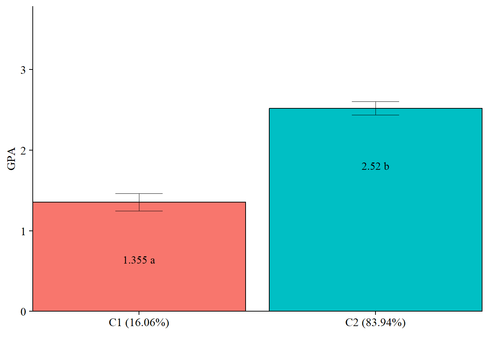

6 Automated Three-Step
Note: Prior to adding covariates or distals enumeration must be conducted. See Lab 6 for examples of enumeration with MplusAutomation.
6.1 Application: Undergraduate Cheating behavior
“Dichotomous self-report responses by 319 undergraduates to four questions about cheating behavior” (poLCA, 2016).
Prepare data
data(cheating)
cheating <- cheating %>% clean_names()
df_cheat <- cheating %>%
dplyr::select(1:4) %>%
mutate_all(funs(.-1)) %>%
mutate(gpa = cheating$gpa)
# Detaching packages that mask the dpylr functions
detach(package:poLCA, unload = TRUE)
detach(package:MASS, unload = TRUE)6.2 DU3STEP
DU3STEP incorporates distal outcome variables (assumed to have unequal means and variances) with mixture models.
6.2.1 Run the DU3step model with gpa as distal outcome
m_stepdu <- mplusObject(
TITLE = "DU3STEP - GPA as Distal",
VARIABLE =
"categorical = lieexam-copyexam;
usevar = lieexam-copyexam;
auxiliary = gpa (du3step);
classes = c(2);",
ANALYSIS =
"estimator = mlr;
type = mixture;
starts = 500 100;
processors = 10;",
OUTPUT = "sampstat patterns tech11 tech14;",
PLOT =
"type = plot3;
series = lieexam-copyexam(*);",
usevariables = colnames(df_cheat),
rdata = df_cheat)
m_stepdu_fit <- mplusModeler(m_stepdu,
dataout=here("three_step", "auto_3step", "du3step.dat"),
modelout=here("three_step", "auto_3step", "c2_du3step.inp") ,
check=TRUE, run = TRUE, hashfilename = FALSE)6.2.2 Plot Distal Outcome
modelParams <- readModels(here("three_step", "auto_3step", "c2_du3step.out"))
# Extract class size
c_size <- as.data.frame(modelParams[["class_counts"]][["modelEstimated"]][["proportion"]]) %>%
rename("cs" = 1) %>%
mutate(cs = round(cs*100, 2))
c_size_val <- paste0("C", 1:nrow(c_size), glue(" ({c_size[1:nrow(c_size),]}%)"))
# Extract information as data frame
estimates <- as.data.frame(modelParams[["lcCondMeans"]][["overall"]]) %>%
reshape2::melt(id.vars = "var") %>%
mutate(variable = as.character(variable),
LatentClass = case_when(
endsWith(variable, "1") ~ c_size_val[1],
endsWith(variable, "2") ~ c_size_val[2])) %>% #Add to this based on the number of classes you have
head(-3) %>%
pivot_wider(names_from = variable, values_from = value) %>%
unite("mean", contains("m"), na.rm = TRUE) %>%
unite("se", contains("se"), na.rm = TRUE) %>%
mutate(across(c(mean, se), as.numeric))
# Add labels (NOTE: You must change the labels to match the significance testing!!)
value_labels <- paste0(estimates$mean, c(" a"," b"))
# Plot bar graphs
estimates %>%
ggplot(aes(fill = LatentClass, y = mean, x = LatentClass)) +
geom_bar(position = "dodge", stat = "identity", color = "black") +
geom_errorbar(aes(ymin=mean-se, ymax=mean+se),
size=.3,
width=.2,
position=position_dodge(.9)) +
geom_text(aes(y = mean, label = value_labels),
family = "serif", size = 4,
position=position_dodge(.9),
vjust = 8) +
#scale_fill_grey(start = .5, end = .7) +
labs(y="GPA", x="") +
theme_cowplot() +
theme(text = element_text(family = "serif", size = 12),
axis.text.x = element_text(size=12),
legend.position="none") +
coord_cartesian(expand = FALSE,
ylim=c(0,max(estimates$mean*1.5))) # Change ylim based on distal outcome rang
6.3 R3STEP
R3STEP incorporates latent class predictors with mixture models.
6.3.1 Run the R3STEP model with gpa as the latent class predictor
m_stepr <- mplusObject(
TITLE = "R3STEP - GPA as Predictor",
VARIABLE =
"categorical = lieexam-copyexam;
usevar = lieexam-copyexam;
auxiliary = gpa (R3STEP);
classes = c(2);",
ANALYSIS =
"estimator = mlr;
type = mixture;
starts = 500 100;
processors = 10;",
OUTPUT = "sampstat patterns tech11 tech14;",
PLOT =
"type = plot3;
series = lieexam-copyexam(*);",
usevariables = colnames(df_cheat),
rdata = df_cheat)
m_stepr_fit <- mplusModeler(m_stepr,
dataout=here("three_step", "auto_3step", "r3step.dat"),
modelout=here("three_step", "auto_3step", "c2_r3step.inp") ,
check=TRUE, run = TRUE, hashfilename = FALSE)6.3.2 Regression slopes and odds ratios
TESTS OF CATEGORICAL LATENT VARIABLE MULTINOMIAL LOGISTIC REGRESSIONS USING
THE 3-STEP PROCEDURE
WARNING: LISTWISE DELETION IS APPLIED TO THE AUXILIARY VARIABLES IN THE
ANALYSIS. TO AVOID LISTWISE DELETION, DATA IMPUTATION CAN BE USED
FOR THE AUXILIARY VARIABLES FOLLOWED BY ANALYSIS WITH TYPE=IMPUTATION.
NUMBER OF DELETED OBSERVATIONS: 4
NUMBER OF OBSERVATIONS USED: 315
Two-Tailed
Estimate S.E. Est./S.E. P-Value
C#1 ON
GPA -0.698 0.255 -2.739 0.006
Intercepts
C#1 -0.241 0.460 -0.523 0.601
Parameterization using Reference Class 1
C#2 ON
GPA 0.698 0.255 2.739 0.006
Intercepts
C#2 0.241 0.460 0.523 0.601
ODDS RATIOS FOR TESTS OF CATEGORICAL LATENT VARIABLE MULTINOMIAL LOGISTIC REGRESSIONS
USING THE 3-STEP PROCEDURE
95% C.I.
Estimate S.E. Lower 2.5% Upper 2.5%
C#1 ON
GPA 0.498 0.127 0.302 0.820
Parameterization using Reference Class 1
C#2 ON
GPA 2.009 0.512 1.220 3.310